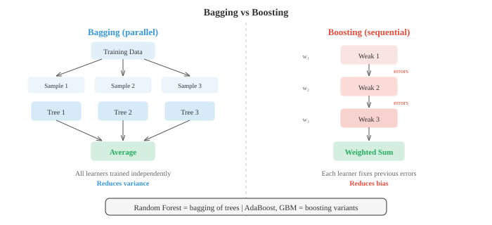

Classical Machine Learning¶
Classical ML algorithms learn patterns from data without explicit programming, using closed-form solutions or heuristic search rather than gradient descent. This file covers Naive Bayes, k-NN, decision trees, random forests, SVMs, k-means clustering, and PCA
-
Machine learning is the study of algorithms that improve their performance on some task by learning from data, rather than being explicitly programmed with rules. Instead of writing "if income > 50k and age < 30 then approve loan," you hand the algorithm thousands of past loan decisions and let it figure out the pattern.
-
There are three broad paradigms. Supervised learning uses labelled data, meaning each input comes with a known correct output. The algorithm learns a mapping from inputs to outputs. Unsupervised learning works with unlabelled data and tries to discover hidden structure, like clusters or compressed representations. Reinforcement learning learns through trial and error, receiving rewards or penalties for actions taken in an environment (covered in file 04).
-
Within supervised learning, classification predicts discrete categories (spam or not spam, cat or dog) while regression predicts continuous values (house price, temperature tomorrow). The boundary is not always sharp: logistic regression is named "regression" but performs classification.
-
A key distinction in probabilistic models is generative vs discriminative. A generative model learns the joint distribution \(P(x, y)\), which means it understands how the data itself is generated. It can produce new samples. A discriminative model learns \(P(y \mid x)\) directly, focusing only on the boundary between classes. Naive Bayes is generative; logistic regression (file 02) is discriminative. Generative models are more flexible but harder to train well; discriminative models often give better classification accuracy when you have enough data.
-
Naive Bayes is one of the simplest and most effective classifiers. It applies Bayes' theorem (from chapter 05) directly:
-
The "naive" part is a strong independence assumption: it treats every feature as independent given the class. If you are classifying emails as spam, Naive Bayes assumes the presence of the word "free" tells you nothing about the presence of the word "winner," once you know the email is spam. This is almost never true in reality, but the classifier works surprisingly well anyway.
-
Since \(P(x)\) is the same for all classes, classification simplifies to picking the class that maximises the numerator:
-
The prior \(P(C_k)\) is just the fraction of training examples in each class. The likelihoods \(P(x_i \mid C_k)\) depend on what kind of features you have, which gives rise to three common variants.
-
Multinomial Naive Bayes is designed for count data, like word frequencies in documents. Each feature \(x_i\) represents how many times word \(i\) appears, and the likelihood follows a multinomial distribution. This is the standard choice for text classification, sentiment analysis, and spam filtering.
-
Gaussian Naive Bayes assumes each feature follows a normal distribution within each class. You estimate the mean \(\mu_{ik}\) and variance \(\sigma_{ik}^2\) of feature \(i\) for class \(k\) from the training data, then compute:
- This is the natural choice when your features are continuous measurements, like height, weight, or sensor readings.

-
Bernoulli Naive Bayes models binary features: each feature is either present (1) or absent (0). Instead of counting how many times a word appears, you only track whether it appears at all. This works well for short texts or binary feature vectors.
-
A practical problem arises when a feature value never appears with a certain class in training data. The likelihood becomes zero, and because everything is multiplied together, the entire posterior collapses to zero. Laplace smoothing fixes this by adding a small count (usually 1) to every feature-class combination:
-
Here \(\alpha\) is the smoothing parameter (typically 1) and \(V\) is the number of possible values for that feature. This ensures no probability is ever exactly zero.
-
Decision trees take a completely different approach. Instead of computing probabilities, they partition the feature space through a sequence of yes/no questions. Think of the game Twenty Questions: at each step, you ask the question that narrows down the possibilities the most.
-
A tree starts at the root with all training examples. At each internal node, it picks a feature and a threshold to split on (e.g., "is age < 30?"). Examples flow left or right based on the answer. This continues recursively until the leaves, which hold predictions: the majority class for classification, or the mean value for regression.

-
The critical question is: which feature should you split on? You want splits that produce the "purest" child nodes, where most examples belong to the same class. Two common measures of impurity are Gini impurity and entropy.
-
Gini impurity measures the probability that a randomly chosen sample would be misclassified if labelled according to the distribution in that node:
-
If a node is perfectly pure (all one class), Gini is 0. If classes are equally balanced (say 50/50 for two classes), Gini reaches its maximum of 0.5.
-
Entropy (from chapter 05's information theory section) measures the average surprise:
-
A pure node has entropy 0. A perfectly balanced binary node has entropy 1 bit. In practice, Gini and entropy give very similar trees; Gini is slightly faster to compute since it avoids the logarithm.
-
Information gain is the reduction in impurity achieved by a split. For a split that divides set \(S\) into subsets \(S_L\) and \(S_R\):
-
The algorithm greedily picks the split with the highest information gain at each node. This is a locally optimal strategy, not globally optimal, but it works well in practice.
-
Regression trees work the same way, but leaves predict a continuous value (the mean of the examples that reach that leaf) and the splitting criterion uses variance reduction instead of Gini or entropy.
-
Left unchecked, a decision tree will keep splitting until every leaf is pure, essentially memorising the training data. This is severe overfitting. Pruning combats this. Pre-pruning sets limits before growing the tree: maximum depth, minimum samples per leaf, or minimum information gain to make a split. Post-pruning grows the full tree first, then removes branches that do not improve performance on a validation set.
-
A single decision tree is easy to interpret but tends to be unstable: small changes in the data can produce a very different tree. Ensemble methods combine many models to get better predictions than any single model could achieve.
-
The core idea is the "wisdom of crowds." If you ask 100 mediocre classifiers and take a majority vote, the ensemble can be excellent, as long as the individual classifiers make somewhat independent errors.
-
Bagging (bootstrap aggregating) trains multiple models on different random subsets of the data, sampled with replacement (bootstrap samples). Each model sees roughly 63% of the original data. At prediction time, you average the outputs (regression) or take a majority vote (classification). Because each model sees different data, they make different mistakes, and averaging cancels out much of the variance.
-
Random Forests are bagging applied to decision trees with one extra twist: at each split, the tree only considers a random subset of features (typically \(\sqrt{d}\) features out of \(d\) total). This further decorrelates the trees, making the ensemble even more powerful. Random forests are one of the most reliable off-the-shelf classifiers in all of machine learning.

-
Boosting takes the opposite philosophy. Instead of training models independently, it trains them sequentially, with each new model focusing on the examples that previous models got wrong.
-
AdaBoost (Adaptive Boosting) maintains a weight for each training example. Initially all weights are equal. After training a weak learner (often a very shallow decision tree, called a "stump"), examples that were misclassified get higher weights, so the next learner pays more attention to them. The final prediction is a weighted vote of all learners, where better-performing learners get more say:
- The weight \(\alpha_t\) for learner \(t\) depends on its error rate \(\epsilon_t\):
-
A learner with low error gets a large positive weight; one performing at chance (\(\epsilon = 0.5\)) gets zero weight.
-
Gradient Boosting generalises this idea. Instead of reweighting examples, each new model is trained to predict the residual errors (negative gradient of the loss function) of the combined ensemble so far. For squared error loss, the residuals are literally the differences between predictions and targets. Gradient boosting with decision trees (GBDT) is behind many winning solutions in structured data competitions (XGBoost, LightGBM, CatBoost are popular implementations).
-
The key contrast: bagging reduces variance (averaging out noise) while boosting reduces bias (correcting systematic errors). Bagging works best when individual models overfit; boosting works best when they underfit.
-
Shifting to unsupervised learning, K-Means clustering is the simplest and most widely used clustering algorithm. Given \(n\) data points and a target number of clusters \(K\), it assigns each point to one of \(K\) groups by minimising the total distance from each point to its cluster centre.
-
The algorithm alternates two steps. First, assign each point to the nearest centroid. Second, update each centroid to the mean of all points assigned to it. Repeat until assignments stop changing. This is guaranteed to converge because the total within-cluster distance decreases (or stays the same) at every step.

- Formally, K-Means minimises the within-cluster sum of squares, called inertia:
-
where \(\mu_k\) is the centroid of cluster \(C_k\).
-
K-Means is sensitive to initialisation. Bad starting centroids can lead to poor local minima. The K-Means++ initialisation strategy picks the first centroid randomly, then chooses each subsequent centroid with probability proportional to its squared distance from the nearest existing centroid. This spreads out the initial centres and almost always gives better results.
-
How do you choose \(K\)? Two common tools. The elbow method plots inertia vs \(K\) and looks for the "elbow" where adding more clusters stops helping much. The silhouette score measures how similar a point is to its own cluster compared to the nearest other cluster, ranging from -1 (wrong cluster) to +1 (well clustered). Average silhouette score across all points gives an overall measure of cluster quality.
-
K-Means has limitations: it assumes spherical clusters of roughly equal size, and it makes "hard" assignments (each point belongs to exactly one cluster). Gaussian Mixture Models (GMMs) relax both restrictions.
-
A GMM models the data as a mixture of \(K\) Gaussian distributions, each with its own mean \(\mu_k\), covariance \(\Sigma_k\), and mixing weight \(\pi_k\) (where the weights sum to 1):
-
Instead of hard assignments, each point gets a soft assignment: the probability (called the "responsibility") that it belongs to each cluster. A point near the boundary between two Gaussians might be 60% cluster A and 40% cluster B.
-
GMMs are fitted using the Expectation-Maximisation (EM) algorithm, which alternates two steps, much like K-Means. The E-step computes responsibilities: for each point, what is the probability it came from each Gaussian? The M-step updates parameters: given the responsibilities, what are the best means, covariances, and mixing weights? EM is guaranteed to increase the data likelihood at each iteration and converges to a local maximum.
-
K-Means is actually a special case of EM with GMMs: it corresponds to spherical Gaussians with equal covariance and hard (0/1) responsibilities.
-
Support Vector Machines (SVMs) approach classification from a geometric perspective. Given two linearly separable classes, there are infinitely many hyperplanes that separate them. SVM finds the one with the maximum margin, the largest possible gap between the hyperplane and the nearest data points from each class.
-
The nearest points, the ones sitting right on the edge of the margin, are called support vectors. They are the only points that matter for defining the boundary; you could remove all other training points and get the same hyperplane.

- For a linear classifier \(f(x) = w \cdot x + b\), finding the maximum margin amounts to solving:
-
This is a convex quadratic program, so it has a unique global solution (no local minima to worry about).
-
Real data is rarely perfectly separable. Soft-margin SVM allows some points to violate the margin by introducing slack variables \(\xi_i \geq 0\):
-
The hyperparameter \(C\) controls the tradeoff: large \(C\) penalises misclassifications heavily (tighter fit, risk of overfitting), small \(C\) allows more violations (wider margin, more regularised).
-
The most powerful feature of SVMs is the kernel trick. Many datasets that are not linearly separable in the original feature space become separable when mapped to a higher-dimensional space. The kernel trick lets you compute dot products in that high-dimensional space without ever explicitly computing the transformation.
-
A kernel function \(K(x_i, x_j) = \phi(x_i) \cdot \phi(x_j)\) replaces every dot product in the SVM optimisation. The most popular kernel is the Radial Basis Function (RBF) kernel:
-
The RBF kernel implicitly maps data to an infinite-dimensional space. The parameter \(\gamma\) controls how far the influence of a single training point reaches: large \(\gamma\) means each point only influences its immediate neighbourhood (risk of overfitting), small \(\gamma\) gives smoother boundaries.
-
Other common kernels include the polynomial kernel \(K(x_i, x_j) = (x_i \cdot x_j + c)^d\) and the linear kernel \(K(x_i, x_j) = x_i \cdot x_j\) (which is just the standard SVM without any transformation).
-
In practice, SVMs with RBF kernels were the dominant classifier before deep learning took over. They still work well on small-to-medium datasets, especially when the number of features is large relative to the number of samples.
-
The SVM's connection to chapter 02 (matrices) runs deep. The optimisation is typically solved in its dual form, where the solution depends only on dot products between training examples, which is exactly what makes the kernel trick possible. The entire algorithm operates in the language of inner products and linear algebra.
-
To summarise the classical ML toolkit:
| Algorithm | Type | Key Strength | Key Weakness |
|---|---|---|---|
| Naive Bayes | Supervised (generative) | Fast, works with little data | Independence assumption |
| Decision Tree | Supervised | Interpretable | Overfits easily |
| Random Forest | Supervised (ensemble) | Robust, few hyperparameters | Less interpretable |
| Gradient Boosting | Supervised (ensemble) | State-of-the-art on tabular data | Slower, more tuning |
| K-Means | Unsupervised (clustering) | Simple, scalable | Assumes spherical clusters |
| GMM | Unsupervised (clustering) | Soft assignments, flexible shapes | Sensitive to initialisation |
| SVM | Supervised | Effective in high dimensions | Slow on large datasets |
Coding Tasks (use CoLab or notebook)¶
-
Implement Gaussian Naive Bayes from scratch. Train on synthetic 2D data with two classes and visualise the decision boundary. Compare with scikit-learn's implementation.
import jax.numpy as jnp import matplotlib.pyplot as plt from sklearn.datasets import make_classification # Generate synthetic data X, y = make_classification(n_samples=300, n_features=2, n_redundant=0, n_informative=2, n_clusters_per_class=1, random_state=42) X, y = jnp.array(X), jnp.array(y) # Fit Gaussian Naive Bayes from scratch classes = jnp.unique(y) params = {} for c in classes: c = int(c) mask = y == c X_c = X[mask] params[c] = { 'mean': jnp.mean(X_c, axis=0), 'var': jnp.var(X_c, axis=0), 'prior': jnp.sum(mask) / len(y) } def gaussian_log_likelihood(x, mean, var): return -0.5 * jnp.sum(jnp.log(2 * jnp.pi * var) + (x - mean)**2 / var) def predict(X): preds = [] for x in X: log_posts = [] for c in [0, 1]: log_post = jnp.log(params[c]['prior']) + gaussian_log_likelihood( x, params[c]['mean'], params[c]['var']) log_posts.append(log_post) preds.append(jnp.argmax(jnp.array(log_posts))) return jnp.array(preds) # Decision boundary visualisation xx, yy = jnp.meshgrid(jnp.linspace(X[:,0].min()-1, X[:,0].max()+1, 200), jnp.linspace(X[:,1].min()-1, X[:,1].max()+1, 200)) grid = jnp.column_stack([xx.ravel(), yy.ravel()]) zz = predict(grid).reshape(xx.shape) plt.figure(figsize=(8, 6)) plt.contourf(xx, yy, zz, alpha=0.3, cmap='coolwarm') plt.scatter(X[y==0, 0], X[y==0, 1], c='#3498db', label='Class 0', edgecolors='k', s=20) plt.scatter(X[y==1, 0], X[y==1, 1], c='#e74c3c', label='Class 1', edgecolors='k', s=20) plt.title("Gaussian Naive Bayes Decision Boundary") plt.legend() plt.grid(alpha=0.3) plt.show() accuracy = jnp.mean(predict(X) == y) print(f"Training accuracy: {accuracy:.2%}") -
Build a decision tree that splits using Gini impurity. Implement the splitting logic for a single node and show how information gain selects the best feature and threshold.
import jax.numpy as jnp def gini_impurity(y): """Gini impurity of a label array.""" classes, counts = jnp.unique(y, return_counts=True) probs = counts / len(y) return 1.0 - jnp.sum(probs ** 2) def information_gain(y, left_mask): """IG from splitting y into left/right by boolean mask.""" parent_gini = gini_impurity(y) left_y, right_y = y[left_mask], y[~left_mask] n = len(y) if len(left_y) == 0 or len(right_y) == 0: return 0.0 child_gini = (len(left_y)/n) * gini_impurity(left_y) + \ (len(right_y)/n) * gini_impurity(right_y) return float(parent_gini - child_gini) def best_split(X, y): """Find the feature and threshold that maximise information gain.""" best_ig, best_feat, best_thresh = -1, None, None for feat in range(X.shape[1]): thresholds = jnp.unique(X[:, feat]) for thresh in thresholds: mask = X[:, feat] <= float(thresh) ig = information_gain(y, mask) if ig > best_ig: best_ig, best_feat, best_thresh = ig, feat, float(thresh) return best_feat, best_thresh, best_ig # Example: synthetic data from sklearn.datasets import make_classification X, y = make_classification(n_samples=100, n_features=4, n_redundant=0, random_state=0) X, y = jnp.array(X), jnp.array(y) feat, thresh, ig = best_split(X, y) print(f"Best split: feature {feat}, threshold {thresh:.3f}, info gain {ig:.4f}") print(f"Parent Gini: {gini_impurity(y):.4f}") mask = X[:, feat] <= thresh print(f"Left Gini: {gini_impurity(y[mask]):.4f} ({int(jnp.sum(mask))} samples)") print(f"Right Gini: {gini_impurity(y[~mask]):.4f} ({int(jnp.sum(~mask))} samples)") -
Implement K-Means from scratch with K-Means++ initialisation. Cluster a synthetic dataset and visualise the clusters at each iteration.
import jax import jax.numpy as jnp import matplotlib.pyplot as plt from sklearn.datasets import make_blobs # Generate synthetic clusters X, y_true = make_blobs(n_samples=300, centers=4, cluster_std=0.8, random_state=42) X = jnp.array(X) def kmeans_plus_plus_init(X, K, key): """K-Means++ initialisation.""" n = X.shape[0] idx = jax.random.randint(key, (), 0, n) centroids = [X[idx]] for _ in range(1, K): dists = jnp.min(jnp.stack([jnp.sum((X - c)**2, axis=1) for c in centroids]), axis=0) probs = dists / jnp.sum(dists) key, subkey = jax.random.split(key) idx = jax.random.choice(subkey, n, p=probs) centroids.append(X[idx]) return jnp.stack(centroids) def kmeans(X, K, max_iters=20, key=jax.random.PRNGKey(0)): centroids = kmeans_plus_plus_init(X, K, key) history = [centroids] for _ in range(max_iters): # Assign step dists = jnp.stack([jnp.sum((X - c)**2, axis=1) for c in centroids]) labels = jnp.argmin(dists, axis=0) # Update step new_centroids = jnp.stack([ jnp.mean(X[labels == k], axis=0) for k in range(K) ]) history.append(new_centroids) if jnp.allclose(centroids, new_centroids): break centroids = new_centroids return labels, centroids, history K = 4 labels, centroids, history = kmeans(X, K) # Plot final result colors = ['#3498db', '#e74c3c', '#27ae60', '#9b59b6'] plt.figure(figsize=(8, 6)) for k in range(K): mask = labels == k plt.scatter(X[mask, 0], X[mask, 1], c=colors[k], s=20, alpha=0.6) plt.scatter(centroids[k, 0], centroids[k, 1], c=colors[k], marker='X', s=200, edgecolors='k', linewidths=1.5) plt.title(f"K-Means Clustering (K={K}, {len(history)-1} iterations)") plt.grid(alpha=0.3) plt.show() # Compute inertia inertia = sum(jnp.sum((X[labels == k] - centroids[k])**2) for k in range(K)) print(f"Final inertia: {inertia:.2f}") -
Demonstrate the kernel trick. Show that an RBF kernel computes dot products in a high-dimensional space by comparing the kernel matrix with explicit feature mapping for a polynomial kernel.
import jax.numpy as jnp # Simple 2D data X = jnp.array([[1.0, 2.0], [3.0, 4.0], [5.0, 6.0]]) # Polynomial kernel: K(x,y) = (x·y + 1)^2 def poly_kernel(X, degree=2, c=1.0): return (X @ X.T + c) ** degree # Explicit degree-2 feature map for 2D: (1, sqrt(2)*x1, sqrt(2)*x2, x1^2, x2^2, sqrt(2)*x1*x2) def poly_features(X): x1, x2 = X[:, 0], X[:, 1] return jnp.column_stack([ jnp.ones(len(X)), jnp.sqrt(2) * x1, jnp.sqrt(2) * x2, x1 ** 2, x2 ** 2, jnp.sqrt(2) * x1 * x2 ]) K_trick = poly_kernel(X) phi = poly_features(X) K_explicit = phi @ phi.T print("Kernel trick (polynomial degree 2):") print(K_trick) print("\nExplicit feature map dot products:") print(K_explicit) print(f"\nMatrices match: {jnp.allclose(K_trick, K_explicit)}") # RBF kernel: no finite explicit map exists def rbf_kernel(X, gamma=0.5): sq_dists = jnp.sum(X**2, axis=1, keepdims=True) + \ jnp.sum(X**2, axis=1) - 2 * X @ X.T return jnp.exp(-gamma * sq_dists) K_rbf = rbf_kernel(X) print("\nRBF kernel matrix:") print(K_rbf) print("Diagonal is always 1 (a point is identical to itself)") print("Off-diagonal entries decay with distance")